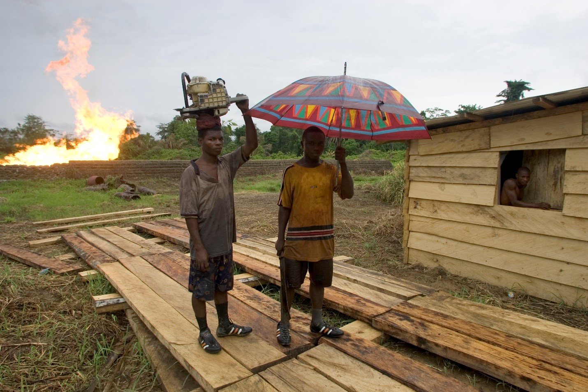
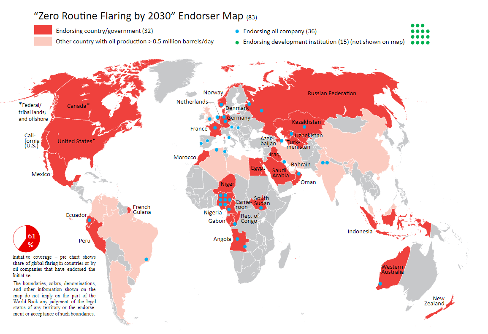
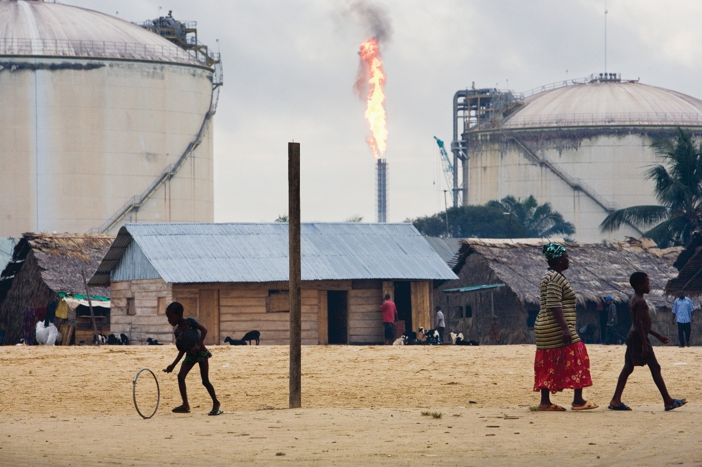

The World Bank: Working to End the 160-Year-Old Practice of Routine Gas Flaring
 During oil production, associated gas is produced with the oil, and this associated gas consists
primarily of methane. Although this gas is often captured and utilized or conserved, some is flared
because of a wide range of technical, regulatory, or economic constraints. Flares at oil production
sites around the world burn approximately 145 billion cubic meters of associated gas each year,
resulting in emissions to the atmosphere of more than 370 million metric tonnes of carbon dioxide
equivalent (MMTCO2e). Flaring also wastes a valuable natural resource that could be used
to increase
energy access and advance the sustainable development of oil-producing countries. For instance, the
amount of gas flared annually across the globe could power the entire African continent.
During oil production, associated gas is produced with the oil, and this associated gas consists
primarily of methane. Although this gas is often captured and utilized or conserved, some is flared
because of a wide range of technical, regulatory, or economic constraints. Flares at oil production
sites around the world burn approximately 145 billion cubic meters of associated gas each year,
resulting in emissions to the atmosphere of more than 370 million metric tonnes of carbon dioxide
equivalent (MMTCO2e). Flaring also wastes a valuable natural resource that could be used
to increase
energy access and advance the sustainable development of oil-producing countries. For instance, the
amount of gas flared annually across the globe could power the entire African continent.
 The World Bank’s “Zero Routine Flaring by 2030” Initiative catalyzes governments, oil companies, and development institutions around the world to commit to end routine gas flaring at oil production sites by 2030. Success is measured by the number of endorsers and the share of total global gas flaring the endorsers represent. As of February 2020, 86 governments, oil companies and development institutions have committed to this Initiative. Endorsers account for approximately 60 percent of global gas flaring, based on 2018 gas flaring estimates.

Endorser Commitments
Through this Initiative, governments and oil companies commit to:
- not routinely flaring associated gas in new oil field developments
- end existing (legacy) flaring as soon as possible or no later than 2030
Note: The Initiative pertains to routine flaring and not to flaring for safety reasons or non-routine flaring, which nevertheless should be minimized. Routine flaring of gas is flaring during normal oil production operations in the absence of sufficient facilities or amenable geology to re-inject the produced gas, utilize it on-site, or dispatch it to a market.
Nigeria: Case Study
 Nigeria is a prominent and noteworthy example of a country that is taking concrete and innovative action in its commitment to achieve Zero Routine Flaring by 2030. The country has embarked on a first-of-its-kind program to tackle gas flaring. The World Bank has been advising and supporting the Government of Nigeria develop and implement its Nigeria Gas Flare Commercialisation Programme (NGFCP), which was created by the government to achieve its commitments under the “Zero Routine Flaring by 2030” Initiative.
Through the NGFCP, the Government of Nigeria is taking a comprehensive approach by commercializing the associated gas as an asset rather than an unwanted byproduct of oil production. The NGFCP will offer the associated gas for sale to third parties through a transparent and competitive bidding process.
Nigeria provides an example of how governments can take a leading role in reducing gas flaring and emissions, while adopting a market-driven approach to monetizing associated gas that otherwise would have been flared. The NGFCP is the first example of a country creating a regulatory framework enabling third parties to monetize and use flared gas.
- Over 250 local and international applicants (third parties) have shown interest by submitting statements of qualification to Nigeria’s Department of Petroleum Resources (DPR).
- Oil industry operators are assessing more critically the costs (including environmental and social costs) associated with flaring versus partnering with midstream companies to develop associated gas-to-market solutions.
- Other governments are watching Nigeria’s approach closely to see how they can replicate this model or use elements of the NGFCP to end routine flaring in their countries.
The NGFCP contributes to Nigeria’s economic development by combining policy, regulation, guidelines, contractual arrangements, bidding processes, market intelligence, institutional capabilities, and data management to bring to market a valuable domestic natural resource. This cost-effective solution puts an otherwise wasted resource into productive use, resulting in improvements to the local environment (particularly the Niger Delta) and the communities affected by flaring.
The Programme has the potential to:
- Contribute $1 billion each year to Nigeria’s gross domestic product
- Generate $3 to $3.5 billion of private investment
- Increase energy access by delivering associated natural gas for power generation
- Reduce Nigeria’s current gas flaring by 65 percent or 4.8 billion cubic meters
- Result in emission reductions of approximately 12.3 MMTCO2e per year